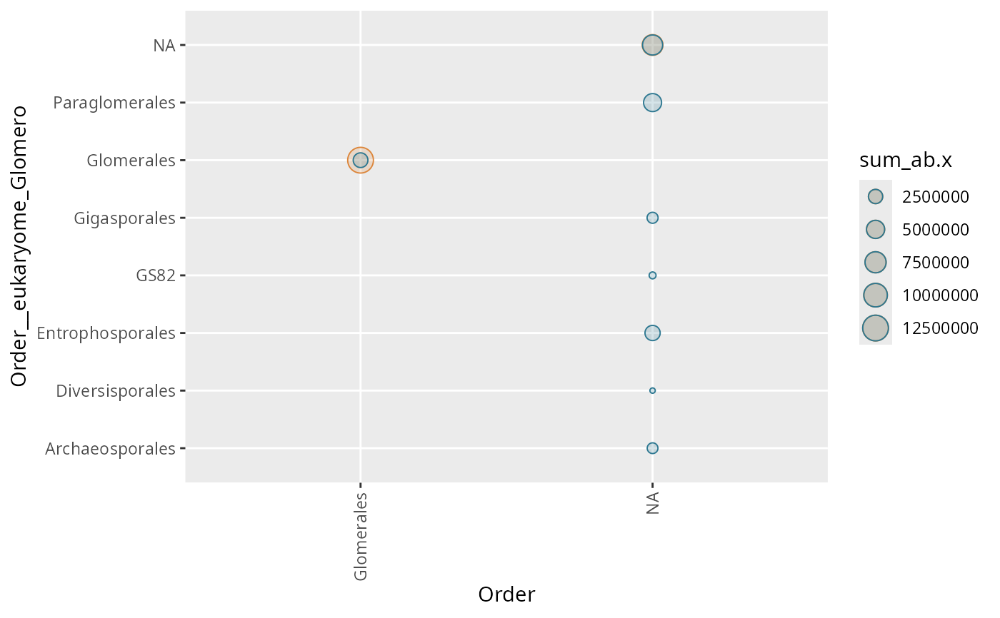

Useful to compare taxonomy from two different source/db/algo side-by-side
Usage
tc_points_matrix(
physeq,
rank_1,
rank_2,
color_1 = "#dc863b",
color_2 = "#2e7891",
stat_across_sample = "sum",
merge_sample_by = NULL
)Arguments
- physeq
(required) A
phyloseq-classobject obtained using thephyloseqpackage.- rank_1
(character or integer) Define the first taxonomic rank as the number or the name of the column in tax_table slot.
- rank_2
(character or integer) Define the second taxonomic rank as the number or the name of the column in tax_table slot.
- color_1
(character, default "#dc863b") Color for rank_1 values.
- color_2
(character, default "#2e7891") Color for rank_2 values.
- stat_across_sample
(character, default "sum") Either "mean" or "sum". Set how the abundance is computed across samples.
- merge_sample_by
(character, default NULL) A vector to determine which samples to merge using
MiscMetabar::merge_samples2()function. Need to be inphyseq@sam_data.
Examples
tc_points_matrix(
subset_taxa_pq(Glom_otu, taxa_sums(Glom_otu) > 5000),
"Order", "Order__eukaryome_Glomero"
)
#> Cleaning suppress 0 taxa ( ) and 1 sample(s) ( samp_Blanc-PCR-racines ).
#> Number of non-matching ASV 0
#> Number of matching ASV 1147
#> Number of filtered-out ASV 955
#> Number of kept ASV 192
#> Number of kept samples 443
#> Warning: Removed 6 rows containing missing values or values outside the scale range
#> (`geom_point()`).

if (FALSE) { # \dontrun{
tc_points_matrix(Glom_otu, 6, 14)
tc_points_matrix(Glom_otu, 4, 12)
tc_points_matrix(Glom_otu, 4, 12, stat_across_sample = "mean")
Glom_otu@sam_data$unique_value <- rep("samp", nsamples(Glom_otu))
tc_points_matrix(as_binary_otu_table(Glom_otu), 5, 13,
stat_across_sample = "sum", merge_sample_by = "unique_value"
)
tc_points_matrix(as_binary_otu_table(Glom_otu), 5, 13,
stat_across_sample = "mean"
)
tc_points_matrix(Glom_otu, 5, 13,
stat_across_sample = "mean"
)
} # }